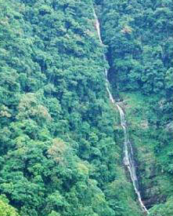

俗称马射尿瀑布,位于广西十万大山南麓的平隆山原始森林里,平隆山在此断裂错开,形成了落差150多米的断裂带,南端下沉形成扶隆沟,从扶隆沟下游溯源而上,峰回溪曲,溪水在山谷间跃腾碰撞,该瀑布乃平隆山原始森林蓄积水汇积而成,一年四季从不间断,冬季水量稍小,从平隆山公路眺望,犹如神马小解,白水从天而降,似白纱轻垂,给平隆山增添几分妩媚,夏秋雨季,雨量丰沛,瀑布宽达数丈,轰然而下,声传数里之外,沟底云雾蒸腾,大有气吞长虹之磅礴气势！